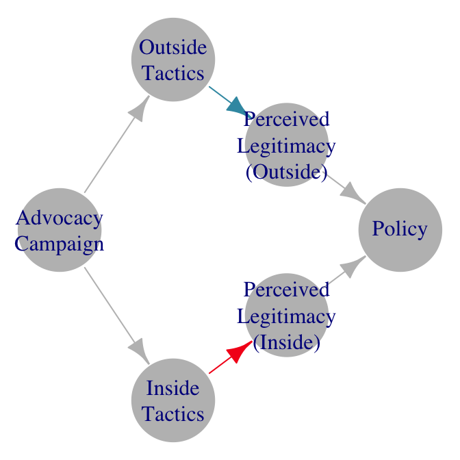

Literature Reviews as Generalization
Using Diagrams to Case Existing Arguments and Evidence
Abstract
This chapter offers tools for two key tasks—casing and causal diagramming—that most literature reviews do only implicitly. Casing literature is how we construct a “set of cases” to make inferences about prior studies. Diagramming makes explicit our understanding of existing causal claims and evidence. I argue that qualitative and quantitative research methods can help us better the case and diagram and thus make clearer inferences about prior literature. Because the objects of study and potential relationships among them are constructed by research communities, diagrams can help assess generalizability by clarifying where meaning is shared. For example, a student may ask to what extent scholars using different methods attach similar or different meanings to named concepts and types of relationships. Where meaning is shared, students might then use diagrams to help identify gaps in relationships examined, the cases studied, or the methods used to assess a relationship. Where meaning is not shared, the exercise clarifies where researchers may be “talking past one another.” Visually examining both shared and divergently defined concepts and relationships among them may also help reveal unstated assumptions in a body of scholarship.
Keywords
literature review, casing, diagramming, Directed Analytic Graphs, causal relationships, generalizability, shared meaning
Updated
The most recent draft is here: judgelord.github.io/dags.
“Whoever speaks of man will, therefore, have to speak at some stage of human knowledge. This is a troublesome prospect. For the task seems to be without end: as soon as we had completed one such study, our subject matter would have been extended by this very achievement. We should then have now to study the study that we just completed.” - Polanyi (1959) The Study of Man
1 Introduction
Literature reviews are a form of generalization.
Iteratively throughout the research process, we engage in at least three related tasks: (1) understanding prior theorizing and research, (2) identifying/clarifying our theoretical and empirical contributions, (3) translating and bounding our contributions in relation to prior theorizing and research. In doing so, we situate our work in a scholarly community and make it legible to them.
This chapter offers tools for conducting literature reviews, borrowing insights from qualitative and quantitative research methods. These tools help us with two key tasks—casing and causal diagramming—that most literature reviews do more implicitly than explicitly. Casing is how we construct a “set of cases” from prior studies. Diagramming makes explicit our understanding of existing concepts, causal claims, and evidence. To help us better case and diagram prior literature, I adapt research methods from qualitative casing, elicitation, and network statistics. These tools—developed for understanding and communicating our own data and causal models—are also useful for exploring and communicating our claims about prior work. Just as there will always be uncertainty in our inferences from evidence, there will always be uncertainty in our inferences about prior research. Prior research should be treated as an object of study, about which we attempt to make clear claims with transparent methods that highlight uncertainty and assumptions.
My starting premise is that typical modes of generalizing about the state of “the literature”—ad hoc impressions and citation networks—are deficient for two related reasons. First, neither our impressions of scholarly debates nor citation networks directly assess the thing we really want to know: where are our theories or evidence for them are incomplete or conflicting. The impressions we develop about scholarly debates through our academic work are not rigorous. They are approximations of the existing arguments based on a limited and non-systematic sample. Similarly, while citation networks can be systematic in a way, they do not necessarily reflect theory. Second, both are biased in the same direction from our core interest in theory and evidence. The direction is toward the prestige and prominence of authors. Some authors are more often cited, discussed, and given prominent platforms. As Fricker (2007) puts it, “powerful have an unfair advantage in structuring collective social understandings” (p. 147). Relying on our impressions and citation networks means over-sampling some relevant studies and likely missing others. We can never fully escape this bias.
The typical advice is to be more comprehensive in the literature we review. While admirable and increasingly aided by technologies like the Web of Science and Google Scholar, this advice is troublesome because the task is without end. But comprehensiveness is not the only way to improve literature reviews; we must also strive for richness and clarity in our claims. This essay offers tools to improve the clarity rather than the breadth of a literature review.
I propose focusing more directly on our object of inquiry: gaps or conflicts in our causal theories or evidence. We may also wish to comment on whether concepts and relationships have been treated as central or peripheral or the types of data and methods thus far employed to study them. Doing so shifts our orientation from position-taking (“who am I with and against?”) or situating (“whose work is my study related to?”) toward tasks more akin to translating (Simmons and Smith 2023), casing (Soss 2021), and constructing (ADD CITE). Rather than “locating” or “situating” our research in a web of citations, this approach focuses on making explicit the inevitable conjectures and intellectual work we do when we put prior work “in conversation” or assert that some studies are the same or different than others. I focus on social science because our work inevitably spans incommensurate social contexts and human experiences. More transparently constructing literature reviews cannot solve the problem that Fricker (2007) calls “hermeneutical injustice,” but it may help us think more deeply about how we construct our understanding of scholarly literature as a form of social understanding.
At its root, casing and diagramming are not novel. Whiteboards, notepads, and occasionally manuscripts are full of causal diagrams that attempt to clarify causal relationships. In doing so, we inevitably name key concepts and assert similarities among prior studies. My intervention is merely to suggest that we can do this better by borrowing research methods developed for similar tasks in empirical research. Literature reviews better serve their purpose the more they make explicit our conjecture about others’ causal claims and evidence. Put differently, if literature reviews are exercises in inference, we can use appropriate tools of inference to interrogate our claims about what others have said. Just as we use tools to make clearer definitional and causal claims, we can use tools to make clearer claims about definitional and causal claims. Here, I focus on a few such tools.
These tools are useful because our training in the art of literature review is mostly on-the-job training. Templates for seminar papers and theses often have a section titled “Literature Review” (though books and journal articles generally do not). It is clear that a bunch of citations belong in this section, but there is little guidance on how to compose it. Most of us learn how to do this through comments from professors on our papers and instructions on how to explore citation networks on the Web of Science or Google Scholar. Probably the most commonly assigned book to political science graduate students, Designing Social Inquiry (King, Keohane, and Verba 1994) on “how to pose questions and fashion scholarly research” (p. 1) has sections on summarizing data and constructing causal theories but does not discuss summarizing prior research or constructing claims about the literature. Students are told to “make a specific contribution to an identifiable scholarly literature” by “explicitly locating a research design within the framework of the existing social scientific literature” (p. 15-16).1 They conclude with the following charge:
Having tentatively chosen a topic, we enter a dialogue with the literature. What questions of interest to us have already been answered? How can we pose and refine our question so that it seems capable of being answered with the tools available? We may start with a burning issue, but we will have to come to grips both with the literature of social science and the problems of inference. (King, Keohane, and Verba 1994, 19)
This is more or less the end of the advice on how to come to grips with the literature. The rest of the book is about the problems of inference in answering research questions. Other common research design textbooks (e.g., Brady and Collier 2010) similarly provide little guidance on literature review. In collaborative work, it is often the senior scholar’s role to “situate” the project in literature, of which they have a richer impression gained through their years of observing academic debates.
Literature reviews inevitably involve generalizing. Summarizing and diagramming literature is an exercise in generalizing concepts (boxes, “nodes”) and generalizing relationships (arrows, “edges”). To construct a diagram representing prior work, we must choose to assign the key concepts of prior studies to either the same box or different boxes or nodes. Likewise, we must decide if a given study theorized or tested a given causal relationship. The process of choosing prior studies to review and assigning labels to the concepts and relationships they discuss is parallel to what we do when we choose cases to study, what Soss (2021) calls “casing.”
1.1 Casing
Portions of texts that review prior literature often include a named concept or causal claim followed by a string of citations. This is an assertion that all of those studies mean the same thing when they use this language. If they used different words, it is an assertion that they meant the same thing. This is parallel to the “unit homogeneity” assumption in quantitative research (King, Keohane, and Verba 1994, 91) and process tracing (Beach and Pedersen 2013, XX)—that these prior studies are all cases of the same thing.
In “casing” the prior literature, we make claims about the subjects of inquiry (Soss 2021). While often implicit, doing so makes claims about the similarity of context, concepts, and causal relationships—i.e., claims about the similarity of cases. Inevitably, casing the literature is a joint result of how previous scholars created the object of their inquiry and how we construct a “set of cases” from those studies.
Almost without exception in the social sciences, meta-analyses note the difficulty of comparing findings across studies due to differences in how different studies conceptualize and operationalize variables the meta-analysis seeks to assess. The conjecture of all meta-analyses is that the relationship examined in each study is conceptually the same, and thus the findings are comparable. Stated differently, in order to assess whether the findings generalize, we must assert that the concepts generalize.
When we say that a theory travels from one context to another, we are talking about the same thing that King, Keohane, and Verba (1994) discuss when they talk about the “distance that must be traversed” between theory and measurement.
“The gap between concept and indicator is inevitable in much social science work. And we use general terms rather than specific ones for good reasons: they allow us to expand our frame of reference and the applicability of our theories. Thus, we may talk of legislatures rather than more narrowly defined legislative categories such as parliaments or specific institutions such as the German Bundestag. Or we may talk of”decision-making bodies” rather than legislatures when we want our theory to apply to an even wider range of institutions…But our abstract and general terms must be connected to specific measurable concepts at some point to allow empirical testing. The fact of that connection–and of the distance that must be traversed to make it—must always be kept in mind and made explicit.”
We have choices about how to name the concepts we which to deploy to do the intellectual work of arguing that cases are similar (whether those cases be observations, field sites, or prior studies). Using more general language brings in a larger scoped of potential cases of which we want to assert sameness. However, more general language also increases the distance between concepts and cases. For literature reviews, more general language allows us to assert a wider range of prior studies to have studied the same concept, but it does so by increasing the distance in what that concept likely means across those contexts—the distance we must traverse to generalize.
[ADD SOMETHING ON GERTZ ON CONCEPTS? + VEN DIAGRAMS OF CONCEPT COMPATIBILITY]
Riofrancos (2021)
1.2 Diagramming
Humans have used diagrams as long or longer than written language, and they are a common feature of science writing. Two recent developments make them worth attention. First, they are increasingly common in social science focused on causal identification, such as experimental designs and process tracing. Second, visualization tools have become much easier to use due to advances in network analysis. Computers can now quickly produce diagrams and network statistics about the relationships with relatively minimal input (Lo et al. 2023). As these powerful tools become easier to use, it is a good time to examine their uses beyond causal theorizing and empirical network analysis.
Causal research designs have made productive use of the directed analytic graph (DAG), a tool adapted from engineering to visualize causal processes as a set of arrows (relationships) connecting nodes (social science concepts).2 Increased emphasis on causal identification in social science has increased the prevalence of figures featuring arrows representing causal relationships among variables (e.g., Morgan and Winship 2015). Similar figures are common in studies using process tracing methods (Bennett and George 1997), sometimes called a “process tracing diagram” (Mahoney 2016). In process tracing, nodes of a graph can represent events (Waldner 2014, 134). Researchers also compare diagrams of events (in an “event history map”) to diagrams of theories containing causes, mechanisms, and outcomes (in a “causal graph”) (Beach and Pedersen 2013, 66–73). Even where causality is not identified, most quantitative and qualitative research claims can be visualized as (potentially causal) relationships among concepts (Lo et al. 2023). Even work that makes no comment on cause may benefit from a concept map (see Section 3.1.1).
Qualitative researchers have productively employed directed graphs in a toolkit of research methods known as participant-led diagramming or graphic elicitation (Bravington and King 2018). Many qualitative research tools ask participants to draw their understanding of places or events. One application of drawing exercises is to elicit beliefs about casual relationships from participants by asking them to draw diagrams with arrows. Among other purposes, these methods allow researchers to assess the extent to which understandings of causal relationships among people and events are shared among participants. For example, a researcher might compare participants’ understandings of the timeline of events or the critical junctures.
Diagrams are tools to convey abstractions. All models and general claims about the social world are necessarily simplifications of complex social relations and are thus reductive. Small (and sometimes complex) graphs or concept maps have long been a tool to illustrate claims in a way that makes them easier to understand. In some ways, visualizations like DAGs offer a richer set of tools for presenting explanations than prose, especially for describing mechanistic explanations. Arrows and nodes in diagrams may use similar or different shapes, colors, or sizes to highlight dimensions of similarities and differences among concepts and causal processes. These maps can powerfully orient a reader to a complex causal story and help focus attention on certain parts of a complex set of relationships.
My aim in this essay is not to explore the implications of the mechanistic view of the world. Much has been written on this in the philosophy of science literature.3
For example, Bechtel and Abrahamsen (2005) contrasts mechanistic explanations with nomological explanations as approaches to scientific representation. In political science, Soss (2021) and others have discussed the advantages of the nominal approach. I also do not attempt to instruct students on conducting generalizable research or interrogate whether generalizability should be the object of study.
My aim is a more limited and practical exploration of the uses and limitations of casing methods and directed analytic graphs as tools in the research process, focusing on the parts of the research process where we review and make claims about the state of existing scholarship.4 Much of this amounts to recommendations on how to use visual tools to be more explicit, clear, and probing about the relationships among theories and findings. A researcher may often conclude that the contexts or assumptions of prior studies are incommensurate, and generalizing across them is impossible. More likely, these exercises will highlight some points of shared meaning and other points of divergent meanings across studies that seem to address the same concepts and causal theories. The aim is to help us clarify how our words fit into a conceptual schema. In the end, I briefly comment on the limits of the visual schema for describing our complex world.
2 How to Map a Literature
This section summarizes Lo et al. (2023) in the language of “casing” a literature.
[TODO: A STEP-BY-STEP GUIDE TO TURNING A LIST OF STUDIES INTO A DIRECTED GRAPH, FOCUSING ON CHALLENGES IN THE REDISTRICTING CASE]
- Defining nodes
- Metadata on nodes
- Defining edges
- One or both directions
- Metadata on edges (e.g., evidentiary warrant)
- When we run into trouble in mapping, this is evidence of conceptual ambiguity.
- Concept maps and causal diagrams serve different purposes. In practice, however, whether something is an antecedent cause or a definition component of a concept is often a matter of perspective. For example, we may measure a behavior (e.g., removing voters from voting rolls) as a cause of an outcome (e.g., fraud), but in practice, we may measure the concept of fraud by the number of voters removed from voting rolls, turning it from a cause to a definition of the outcome. The diagram is the same, but its interpretation and function differ.
3 Assessing the Generalizability of Theories and Findings
Because the objects of study and potential relationships among them are constructed by research communities, diagrams can help assess generalizability by clarifying where meaning is shared. For example, a student may ask to what extent scholars using different methods attach similar or different meanings to named concepts and types of relationships. Scholars may be operating with similar definitions if the words and arrows align. If not, they may be using the same language to talk about different concepts.
Similar to how qualitative researchers use participant-drawn diagrams to reveal how different people understand the world, the similarities and differences in the causal models researchers rely upon (explicitly or implicitly) reveal the state of shared understanding in a research community. Models of causal relationships are developed from specific cases and theories. Generalization involves investigating both the similarity of new exemplars to those already studied and the differences between them (Bechtel and Abrahamsen 2005). Attempting to consolidate causal theories from various studies into a single DAG can help the congruence of both theory and results.
The extent to which theories generalize can be revealed by attempting to consolidate the posited relationships among concepts with other theories built in different contexts. The exercise of attempting to combine causal diagrams from multiple studies may provide clarity that is often missing from prose. For example, a narrative description of how a study is integrating insights from previous work might say something like, “We build on how scholar A defines concept X, but incorporating insights from scholar B’s concepts about Y. Drawing a diagram of the relationship between X and Y may add clarity to what exactly we mean. Is it that X and Y both belong to a larger conceptual category? Is Y a cause, condition, or effect of X that matters for interpreting X or the relationship of X to other concepts? A diagram can force us to clarify things that language can leave ambiguous.
If theories travel well—that is, they can be integrated with diagrams built to describe other contexts, we can then assess the generalizability of findings across contexts. The extent to which findings generalize can be revealed by comparing findings across studies of the same causal relationship. This is what most meta-analyses of empirical findings aim to do.
3.1 Talking Past One Another
To productively employ diagrams to assess generalizability, a student need not conduct a full meta-analysis. Each pairwise comparison of studies presents opportunities to comment on the compatibility of theories. If the theories can be made compatible, and if the studies examine the same arrow between two concepts, then the student can comment on the compatibility of findings. This is the (often implicit) setup of every study that sets out to explain contradictory findings; the conjecture is that the conceptual target is the same and empirical results are different. Formalizing this type of conjecture in a diagram can make such conjectures more explicit.
Where meaning is not shared, the exercise clarifies where researchers may be “talking past one another.” This can occur in several ways. They may be using different words for similar concepts, similar words for different concepts, or different causal models.
3.1.1 Concept-label mismatch
Concepts and labels may diverge in two ways: (1) scholars may use different words for the same concept or (2) the same words for different concepts. This is often the unintended result of distributed nature of knowledge production. Science evolves organically in distinct language and epistemic communities; there is no one central clearing-house or standards organization for scientific concepts. However, explicit interventions may aim to shift how a word is defined or the label uses for a concept. For example whether scientists should say “global warming” or “climate change” to describe the effects of greenhouse gasses. There are also related debates over how words like democracy and sustainability are defined. Fights over labels and definitions are intertwined—whether a given country or practice qualifies as democratic depends on the definition.
3.1.1.1 Differnt words, same concept
When scholars use different words to describe similar concepts, it will appear in a diagram as two nodes with the same arrows going in from and out to other nodes. A diogram may help resolve confusion by visually situating labels for the same concept in parallel positions, prompting us to ask if there are two parallel causal mechanisms, or if, perhaps, various scholars are really talking about the same concepts with different jargon.
3.1.1.2 Same word, different concepts
When scholars use the same word or phrase for different concepts, drawing arrows going in or out of that node becomes difficult. When a phrase holds one concept, one set of causal relationships makes sense, but when we switch to the other definition, many of those relationships may not make sense. This is a clue that there is ambiguity in the term and a lack of shared understanding.
Studies that set out to reconcile contradictory findings often conclude that previous studies arrived at different results because they operationalized (e.g., measured) concepts differently. Two studies may use the same labels with different meanings and thus reach opposite conclusions. For example, political scientists, sociologists, and legal scholars debated whether voluntary certification standards had increased or decreased in stringency for decades. Studies came to opposite conclusions about whether stringency was increasing, decreasing, or staying the same because they measured regulatory stringency differently (Judge-Lord, McDermott, and Cashore 2020). In Figure 1, the blue nodes represent measures used by Cashore, Auld, and Newsom (2004), and the red nodes represent measures used by Overdevest and Zeitlin (2014) to arrive at opposing conclusions.
This is an example where diagramming reveals more about conceptual mapping than causal theorizing. Cashore, Auld, and Newsom (2004) or Overdevest and Zeitlin (2014) only have different causal models of the relationship between forestry certification and sustainability in the sense that they implicitly define the concept of sustainability differently by focusing on different things. We might call these things inputs if we have some external definition of sustainability and want to think about forestry practices as causal antecedents. Alternatively, we could treat forestry practices as “components” of the concept of sustainability. This latter approach makes Figure 1 more of a concept map than a causal diagram. Neither Cashore, Auld, and Newsom (2004) nor Overdevest and Zeitlin (2014) is clear about whether they are thinking about the things they measure as causal antecedents to sustainability or as a definition. A future study using an empirical measure of forest health will want to understand it as a causal model, whereas a study focused on measuring regulatory stringency, like Judge-Lord, McDermott, and Cashore (2020), may be more likely to present it as a concept map. Either way, the diagram is illuminating.
3.1.1.3 Shifting the meanings of words
When we theorize, we are assert that certain concepts are useful tools for understanding the world. For example, Wedeen (2007) argues that the dominant Schumpeterian definition of democracy “has limitations for scholarly thinking about democracy” p.62). In this case, Wedeen is not confused about the definition of democracy, she is arguing that an alternative definition can be useful in certain cases. Figure Figure 2 visualizes Wedeen’s intervention and, incidentally the lack of conceptual overlap.5


3.1.2 The same words may describe differing causal models
Similarly, scholars may compare different causal relationships but use the same labels to describe these relationships. This may occur even when there is agreement on all of the concepts, cases, and overall aim of the study.
Consider two studies aimed at assessing the effects of advocacy campaigns on U.S. federal agency policy. Balla et al. (2020) and Judge-Lord (2021) use the same data and discuss their research in the same terms, i.e., they agree on the cases and concepts. Both aim to assess whether mass comment campaigns, as one form of “outside lobbying,” affect agency policy. They both look at agency responses to public comments as a measure of whether outside tactics help advocacy campaigns. Yet they come to opposite results. Balla et al. (2020) find that more public comments do not help, but Judge-Lord (2021) finds that they do. However, when we look closely at the DAGs implied by each study, we see that, despite using similar language, their causal models are slightly different, and they compare different pairs of relationships. Balla et al. (2020) compare agency responses to inside lobbying to responses to outside lobbying, including within the same advocacy campaign (comparing the red arrow and blue arrow in Figure 3 (a)). Judge-Lord (2021) compares agency responses only to insider lobbying across advocacy campaigns with and without outside lobbying (comparing the red arrows in Figure 3 (b) across cases). This is an example of two studies talking past each other that becomes clear when we draw the diagram.

The exercises of comparing and attempting to integrate the two DAGs in Figure 3 (a) and Figure 3 (b) raise at least two productive questions. First, there is an extra node (concept) about the perceived legitimacy of outside advocacy claims in Figure 3 (a). A student might ask why this concept is included in one study and not in the other. More generally, we should ask why some concepts a featured in many studies and others are featured in few. Integrating the diagrams helps with this kind of assessment. In more complex diagrams, we might also question why some concepts are more central and others more peripheral to the set of causal relationships thus far explored by using “degree centrality” measures returned by graphing tools like netlit. Table Table 1 shows that the perceived legitimacy of inside advocacy tactics is more central to the theory in Judge-Lord (2021) (with a total degree central of 3) than in Balla et al. (2020) (with a total degree central of 2).
| Node | Degree Centrality (Balla et al. 2020) | Degree Centrality (Judge-Lord 2021) |
|---|---|---|
| Advocacy Campaign | 2 | 2 |
| Inside Tactics | 2 | 2 |
| Outside Tactics | 2 | 2 |
| Perceived Legitimacy (Inside) | 2 | 3 |
| Perceived Legitimacy (Outside) | 2 | NA |
| Policy | 2 | 1 |
Second, visualizing the causal models implied by these two studies reveals that, despite aiming to study the same thing, they are comparing different things. Students might ask which comparisons best answer the question. In some cases, we may conclude that previous studies have been comparing the wrong things. Other times, we may conclude that there are multiple valuable interpretations of a question—both sets of scholarship may be right, just talking past each other. Diagrams may help clarify such ambiguity.
3.2 Literature Reviews in Inductive and Deductive Research
All of the issues described above apply to both deductive and inductive approaches. It may seem that the role of literature review is clearer in deductive research that starts with “existing” theory and attempts to extend or test it. This is an illusion. All of the same challenges apply to deductive and inductive theoretical and empirical work.6
Challenges in translating concepts across cases are most apparent in more inductive research. When we start with phenomena and ask what theories might help explain them, such questions focus on the similarity mismatch between observational context and prior research. Doing so also highlights the different meanings that words have been given by different scholars and how different words may have been used to study similar phenomena. Deductive work confronts these same mismatches when it attempts to “operationalize” the theory or craft testable hypotheses—i.e., to make it specific enough that it can be studied empirically. The empirical implications of deductive models are challenging and important because they force scholars to specify what more general theories mean in particular social contexts. Doing so may reveal a conceptual mismatch between studies that was hidden by the ambiguity of higher-level language of theory.7
4 Identifying Gaps in Literatures
Where meaning is shared, students might use diagrams to help identify gaps in relationships examined, the cases studied, or the methods used to assess a relationship. For example, the two studies shown in Figure 3 generally agree on the causal model, use similar data, and similar methods. However, neither study examined the advocate’s choice to use inside or outside lobbying tactics. A broader review of the literature will find little written about this in the context of U.S. agency policymaking. Likewise, the cases for both studies are federal agency rules. A broader review of the literature will find almost no parallel research on state agency rules.
4.1 Identifying Gaps in Relationships Studied
Representing the world as sets of discrete causes, mechanisms, and effects provides direction to both the discovery and testing of mechanistic explanations. Mapping out hypothesized causal chains and mechanisms involves developing organized systems of component parts (Bechtel and Abrahamsen 2005). Each part of a hypothesized causal chain can then be studied with a research design tailored to that narrow task situated within a larger research agenda and picture of the world. This broader picture of the world is what we craft when we review the prior literature.
Diagramming our understanding of theorized concepts and relationships can reveal two broad types of “gaps” that one might identify in a review of prior work: gaps in theory and gaps in the empirical study of theorized relationships.
4.1.1 Gaps in theory
Gaps in theory may appear in a graph as a missing connection between concepts that, upon reflection, may be worth theorizing. They may also appear as connections that, upon reflection, may need further theorizing. For example, Beach and Pedersen (2013) reviews Ziblatt (2008), arguing that the logic of the theory would be stronger if it explicitly stated more detailed mechanisms. Figure 4 diagrams the critique.


4.1.2 Gaps in evidence
Gaps in empirical studies appear when we visually distinguish relationships that have been studied from those that have only been theorized. For example, Lo et al. (2023) review the literature on redistricting in the U.S., distinguishing relationships that have been studied empirically (the solid arrows in Figure 5) from those that have only been theorized (the dashed arrows in Figure 5). For example, Figure 5 shows an example where redistricting that better preserved communities of interest was theorized to reduce voter rolloff (voting for only the first few positions on a ballot) both directly and also indirectly by preserving voter information about their district. However, Lo et al. (2023) only found empirical evidence for the second part of the indirect effect. None of the research reviewed had studied the relationship between preserving communities and voter information about their district. This gap meant that all empirical work suffered from confounding, either from omitted variable or collider bias.

4.2 Identifying Gaps in Cases Studied
Theoretically, one of the most straightforward research designs is to replicate an existing study in a different context. In practice, studies aimed squarely at replication are rare in social science, and differences in contexts mean that concepts and methods will rarely be deployed in exactly the same way. However, it is nevertheless common to motivate research by commenting on the range of cases where similar relationships have and have not been studied. In the context of making claims about cases that have and have not been studied empirically, casing the literature takes the form of claims about empirical contexts that are cases of the same thing.
Diagramming the concepts and relationships of interest may allow researchers to comment more explicitly on the range of previous cases in which a particular relationship has and has not been studied. It makes explicit what we are claiming the subjects of prior research were “cases of” by stating which causal relationships we believe were studied and in other contexts.
4.3 Identifying Gaps in Methods Employed
Defining concepts and studying causal relationships can both be done in many ways. We may thus want to summarize how concepts and relationships among them have been explored in prior studies. To visualize the range of methods previously employed to study a relationship, we can include “metadata” as features of the arrows between concept nodes, for example, different colors to represent different combinations of methods.
5 Unstated Assumptions
Visually examining both shared and divergently defined concepts and the scope of relationships among them thus far explored may also help reveal unstated political assumptions in a body of scholarship. For example, if one has a normative assumption that it is the responsibility of a particular institution to control some aspect of social life, a researcher may draw a causal arrow from that institution to the outcome sought and conclude that the failure of that institution was the cause of the outcome. Consider a river that becomes polluted as it flows through farm fields, causing problems for a city’s drinking water downstream. One social scientist may draw a causal diagram with arrows pointing from a state regulator to the farmers to the pollution, highlighting a lack of state control (Figure 6 (a)). Another social scientist might draw a diagram pointing from the downstream city to the farmers, highlighting the lack of payment to compensate the farmers for providing cleaner water (Figure 6 (b)). Each model assumes a set of social responsibilities and appropriate modes of control.

6 Summarizing Literature with Network Statistics
7 Evolving our Understanding
[A SHORT SECTION ABOUT HOW ENGAGEMENT WITH LITERATURE CAN EVOLVE (I DON’T HAVE MUCH TO SAY ABOUT THIS, BUT IT IS IMPORTANT TO NOTE)]
The idea of literature as a “stage” in the research process artificially and unrealistically frames research as a linear process. In contrast, the casing method advises constantly re-situating a study vis-à-vis other theories. Extending this, our understanding of those other theories should also evolve. We inevitably re-case the literature as our understanding of the phenomena and our empirical cases evolve. Prior theories we once saw as distinct may merge to become cases of something else as we understand better what we are up to. Conversely, we may realize that studies we thought were studying the same thing (or similar enough) are actually too different from our context for the same theory to apply.
- iterative
- fieldwork and framework
8 Conclusion
8.1 Limitations
There are well-noted limitations to mechanistic descriptions of the world. Pictures and diagrams are one way of telling a story, especially a causal story with a precision that is hard to achieve in prose. However, this precision comes at the cost of reducing complexity. And unlike diagrams used for electricity, the way I have described diagramming leaves little room for subjectivity.
8.1.1 Subjective Experience
Diagrams may be poor tools for communicating a researcher’s subjective experiences. Diagrams present the world as mechanistic. For the same reason that a machine is a useful metaphor for simplifying and developing a shared understanding of the world, it also deemphasizes subjective experience. A causal diagram focuses on a process that exists out there in the world rather than an experience. Focusing on the sequence of events may deemphasize how people, including researchers, feel about those events.
However, diagrams can be a tool to systematically gather data on the subjective understandings of causal relationships (Bravington and King 2018). In the same way that formalizing claims about research findings can highlight places where scholars share or lack meaning, qualitative researchers use diagrams as a research tool to elicit participants’ understandings of causal relationships. For example, a researcher might ask participants to draw their understanding of the chain of events or to draw arrows connecting events of interest. This method is known as “graphic elicitation” (Bravington and King 2018).
While Bravington and King (2018) emphasizes the ability of diagrams to capture subjective experience, they are still limited to a mechanistic representation. In their example, emotion might be represented spatially on the vertical of a timeline. While useful, this type of representation still flattens experience.
8.1.2 Loss of Complexity and Nuance
Conceptual complexity and nuance possible in prose are necessarily lost in translation to a graph with discrete boxes and arrows, especially if the aim is to develop general models. Indeed, much of the confusion discussed above resulting from scholars “talking past each other” or using incommensurate models results from words or phrases being taken out of context. In the context of the prose of each study, the definitions of the concepts usually make sense. Confusion arises when we take claims out of this context and set them alongside other studies that use similar words or phrases with different meanings. On the one hand, reconciling conflicting meanings of concepts can resolve ambiguity and contribute toward generalization. On the other hand, doing so may involve abandoning the complexity and nuance that a scholar meant when they developed or adopted a concept to describe a particular set of cases.
[MORE ON FLATTENING TO TWO DIMENSIONS ]
8.2
[RETURN TO CONTRAST WITH WEB OF SCIENCE AND IMPRESSIONS OF SENIOR SCHOLARS]
Appendix
8.3 Code
All plots in this paper used the netlit R package introduced in Lo et al. (2023) (available at https://JudgeLord.github.io/netlit) and the following plot function:
# Example literature review data
edges <- read.csv("https://raw.githubusercontent.com/JudgeLord/dags/refs/heads/main/edges.csv")
node_attributes <- read.csv("https://raw.githubusercontent.com/JudgeLord/dags/refs/heads/main/node_attributes.csv")
library(tidyverse)
library(netlit)
# A plot function based on netlit's review() function
netlit_plot <- function(edges){
# create a graph with netlit's review() function
netlit::review(edges,
edge_attributes = "color",
node_attributes = node_attributes) |>
# Pluck out the graph and plot using the default igraph plot function
pluck("graph") |>
plot()
}
# We can then plot selected nodes or edges
edges |>
filter( cites == "Ziblatt 2009" ) |>
netlit_plot()For fancier plots, see see https://JudgeLord.github.io/netlit/articles
References
ADD. CITE. “Cite Needed.”
Balla, Steven J., Alexander R. Beck, Elizabeth Meehan, and Aryamala Prasad. 2020. “Lost in the Flood?: Agency Responsiveness to Mass Comment Campaigns in Administrative Rulemaking.” Regulation & Governance.
Beach, Derek, and Rasmus Brun Pedersen. 2013. Process Tracing Methods: Foundations and Guidelines. Ann Arbor, MI: University of Michigan Press.
Bechtel, William, and Adele Abrahamsen. 2005. “Explanation: A Mechanist Alternative.” Studies in History and Philosophy of Science Part C: Studies in History and Philosophy of Biological and Biomedical Sciences 36 (2): 421–41. https://doi.org/10.1016/j.shpsc.2005.03.010.
Bennett, Andrew, and Alexander L. George. 1997. “Process Tracing in Case Study Research.” In Studying the Complexity of Domestic and International Political Systems. Washington, DC: U.S. Government Printing Office.
Brady, Henry E., and David Collier, eds. 2010. Rethinking Social Inquiry: Diverse Tools, Shared Standards. Second. Lanham, MD: Rowman & Littlefield Publishers.
Bravington, Alison, and Nigel King. 2018. “Putting graphic elicitation into practice: tools and typologies for the use of participant-led diagrams in qualitative research interviews.” Qualitative Research 19 (5): 506–23. https://doi.org/10.1177/1468794118781718.
Cashore, Benjamin, Graeme Auld, and Deanna Newsom. 2004. Governing Through Markets: Forest Certification and the Emergence of Non-state Authority. Yale University Press. http://politicalscience.yale.edu/publications/governing-through-markets-forest-certification-and-emergence-non-state-authority.
Fricker, Miranda. 2007. “Hermeneutical Injustice.” OUP Academic, June. https://doi.org/10.1093/acprof:oso/9780198237907.003.0008.
Judge-Lord, Devin. 2021. “Public Pressure Campaigns and Bureaucratic Policymaking.” Ph.D. Dissertation, University of Wisconsin-Madison.
Judge-Lord, Devin, Constance L. McDermott, and Benjamin Cashore. 2020. “Do Private Regulations Ratchet up? How to Distinguish Types of Regulatory Stringency and Patterns of Change.” Organization & Environment 33 (1): 96–125. https://doi.org/10.1177/1086026619858874.
King, Gary, Robert O. Keohane, and Sidney Verba. 1994. Designing Social Inquiry: Scientific Inference in Qualitative Research. Princeton, NJ: Princeton University Press.
Lo, Adeline, Devin Judge-Lord, Kyler Hudson, and Kenneth Mayer. 2023. “Mapping Literature with Networks: An Application to Redistricting.” https://doi.org/10.7910/DVN/NV66YN.
Mahoney, James. 2016. “Mechanisms, Bayesianism, and Process Tracing.” New Political Economy 21 (5): 493–99. https://doi.org/10.1080/13563467.2016.1201803.
Morgan, Stephen L., and Christopher Winship. 2015. Counterfactuals and Causal Inference: Methods and Principles for Social Research. 2nd ed. New York, NY: Cambridge University Press.
Overdevest, Christine, and Jonathan Zeitlin. 2014. “Assembling an experimentalist regime: Transnational governance interactions in the forest sector.” Regulation & Governance 8 (1): 22–48. https://doi.org/10.1111/j.1748-5991.2012.01133.x.
Polanyi, Michael. 1959. The Study of Man. Chicago: University of Chicago Press.
Popper, Karl R. 1959. The Logic of Scientific Discovery. London: Hutchinson.
Riofrancos, Thea. 2021. “From Cases to Sites: Studying Global Processes in Comparative Politics.” In Rethinking Comparison: Innovative Methods for Qualitative Political Inquiry, edited by Erin S. Simmons and Nicholas Rush Smith, 107–26. Cambridge University Press.
Simmons, Erica S., and Nicholas Rush Smith. 2023. “How Cases Speak to One Another: How Translation Can Help Us Rethink the Goals of Political Science Research.” University of Wisconsin – Madison; City University of New York – City College.
Soss, Joe. 2021. “On Casing a Study versus Studying a Case.” In Rethinking Comparison: Innovative Methods for Qualitative Political Inquiry, 84–106. Cambridge, England, UK: Cambridge University Press. https://www.cambridge.org/core/books/abs/rethinking-comparison/on-casing-a-study-versus-studying-a-case/9B187E9CED7FF5EA0F55905766686F4A.
Waldner, David. 2014. “What Makes Process Tracing Good? Causal Mechanisms, Causal Inference, and the Completeness Standard in Comparative Politics.” In Process Tracing: From Metaphor to Analytic Tool, edited by Andrew Bennett and Jeffrey T. Checkel, 126–52. Cambridge: Cambridge University Press.
Wedeen, Lisa. 2007. “The Politics of Deliberation: Qāt Chews as Public Spheres in Yemen.” Public Culture 19 (1): 59–84. https://doi.org/10.1215/08992363-2006-025.
Ziblatt, Daniel. 2008. “Does Landholding Inequality Block Democratization?: A Test of the "Bread and Democracy" Thesis and the Case of Prussia.” World Politics 60 (4): 610–41.
Footnotes
King, Keohane, and Verba (1994) offer six possible ways to do so: choose a hypothesis seen as important, choose an accepted hypothesis that may be false, provide further evidence for a debate, evaluate an assumption, argue that a topic has been overlooked, or show that theories or evidence from one literature can be applied in another.↩︎
DAG is also used to describe a Directed Acyclic Graph, a special case where arrows between nodes can point in only one direction. While the acyclic property is extremely important for causal identification (as well as computer operations), it is less important for the applications I discuss here. Indeed, many social science theories posit cyclical relationships, so by “DAG,” I mean a more general Directed Analytic Graph where arrows can go both ways, also called simply a directed graph. Such visualizations with arrows connecting nodes go by many names in different disciplines, including an “influence diagram” in decision analysis and a sub-class of “timeline-based” methods in infographics. In this essay, I use “diagram” and directed analytic graph as synonyms.↩︎
This essay focuses on practical skills. Discussions about the nature of concepts, causality, and knowledge are certainly implicated. While I do not address them, one would no doubt benefit from any deeper engagement with theories of knowledge.↩︎
When research is presented as a linear process literature review is often presented as the first stage, but in this is rarely the case in practice, nor is it usually desirable.↩︎
As presented in Wedeen (2007), in part because her aim is to contrast. A broader review of research on democracy would likely identify overlap.↩︎
As Popper (1959) observes, any theory implies an infinite number of hypotheses. ↩︎